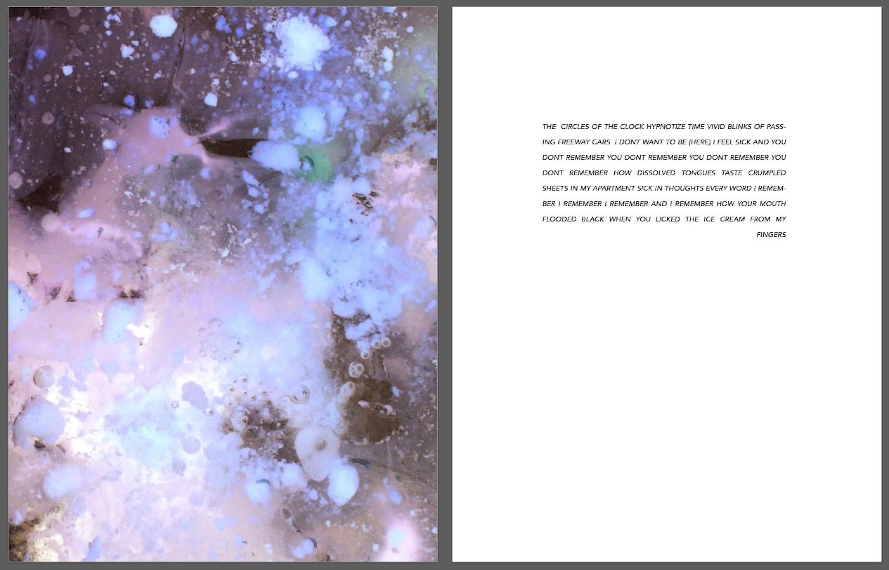
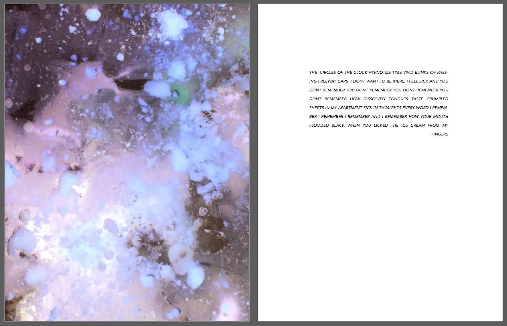
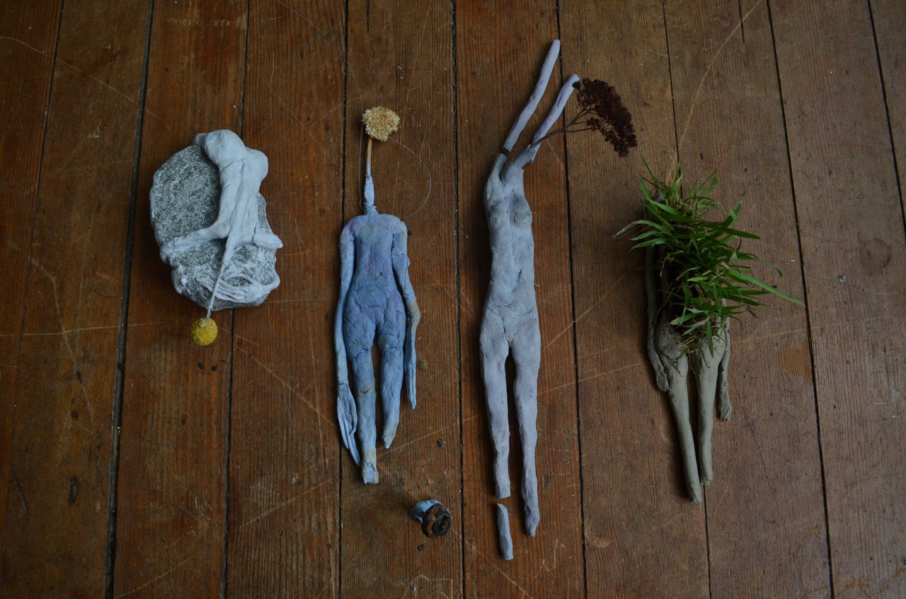
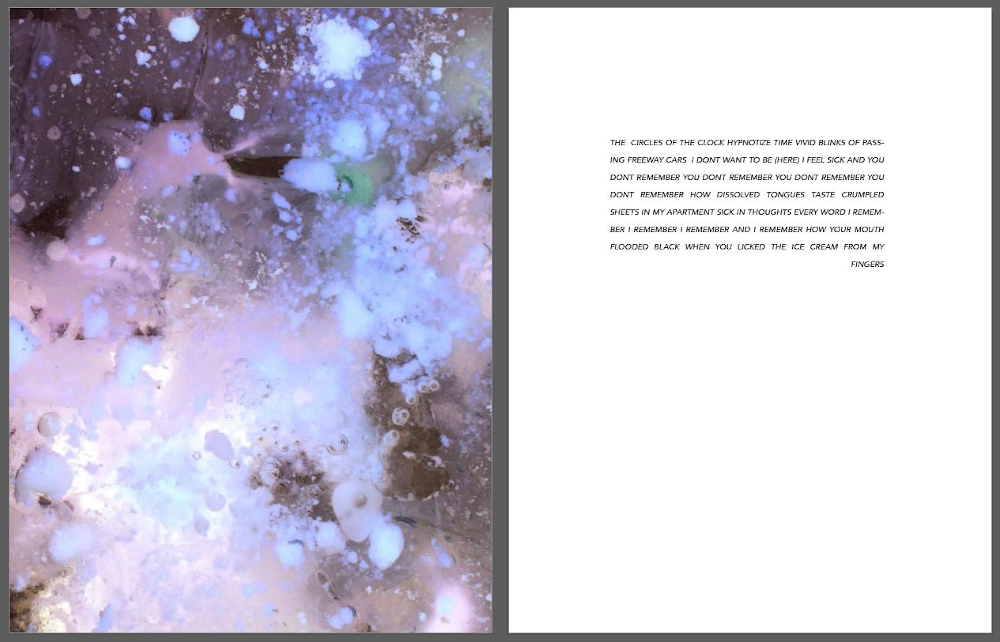

 
it is of not my interest nor concern, whether my Art is an accurate copy of the world. The world only serves the very private function of providing a starting point. if i feel something is worth preserving, something to be seen or shared, i invest in it. I’ve been told by many that the observer will see their fears and hopes. in whatever is seen or felt, one should questions whether its reveals are of any importance.
